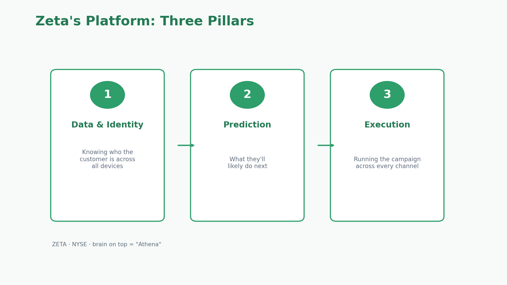
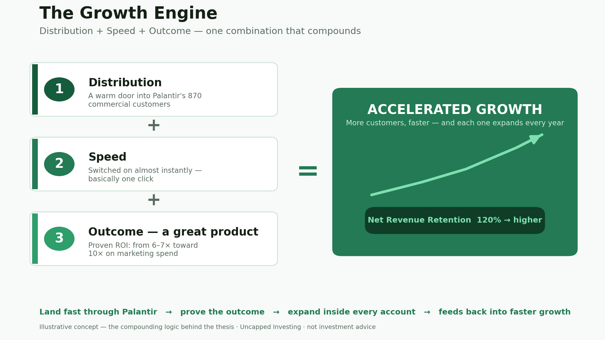
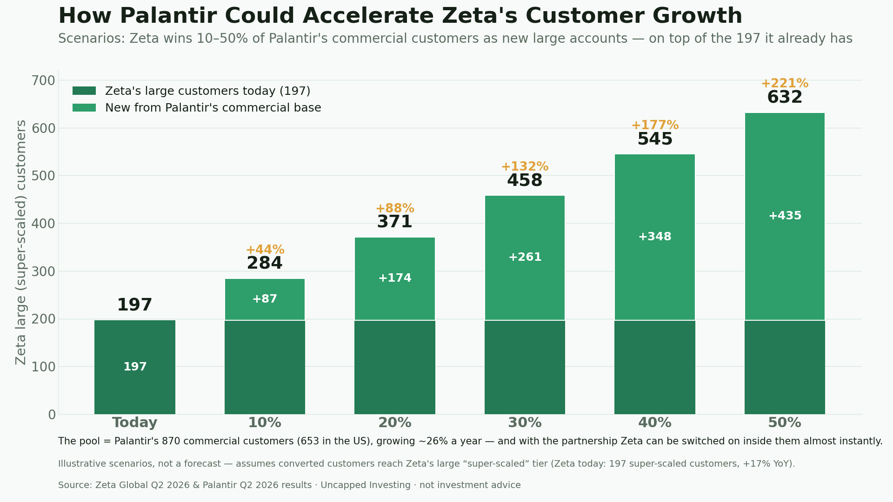
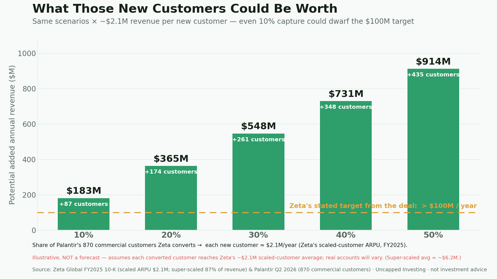
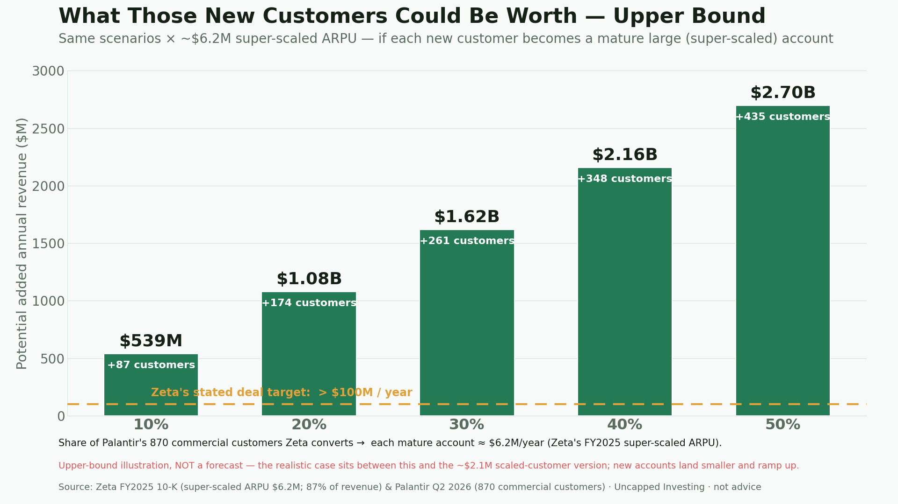
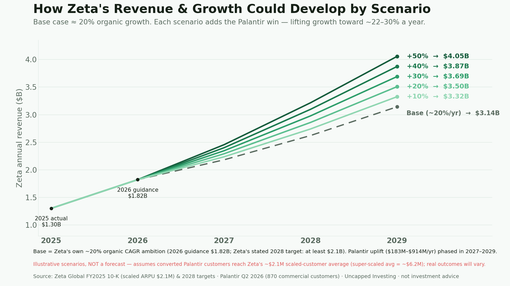

In my last video I told you I own a stock I think is about to break its ceiling. This is the one: Zeta Global. It was already a company I liked — strong growth, real margins, a product built around outcomes. Then it signed a seven-year deal with Palantir, and it moved to one of my three biggest conviction positions. This is the long version — the full case, the real numbers, the scenario math, and the honest risks.
My thesis rests on three legs: (1) Zeta is already a genuinely strong, profitable, fast-growing company on its own; (2) the stock looks fairly valued — maybe even a little cheap for the quality — which keeps the downside contained; and (3) the Palantir partnership could pour fuel on the fire, accelerating customers, revenue and profit faster than most people expect. Let's take them one at a time, and I'll show my work.
1 · What Zeta is — and why it isn't Google or Meta
Zeta (NYSE: ZETA) was founded in 2007 in New York, co-founded by CEO David A. Steinberg and former Apple CEO John Sculley. In plain terms, it's an AI marketing company: it helps big brands reach the right customer, at the right moment, on the right channel — email, SMS, social, connected TV, and the web. The platform stands on three pillars, with an AI "operating system" called Athena sitting on top of them.

Here's the difference that actually matters, and it's the reason I got interested in the first place. With Google and Meta, you rent the audience: you pay to reach customers who ultimately belong to the platform, and the platform keeps the underlying data. Raise the rent and you either pay or go invisible. Zeta flips that model — it helps a company build and own its own customer data and keep control of the results. You're building an asset, not just renting one.
And Zeta doesn't arrive empty-handed. It brings its own proprietary data to the table — a profile of more than 500 million people, assembled from billions of signals across the open internet. That first-party data ecosystem, plus deterministic identity resolution, is exactly what lets Zeta compete on accuracy where a pure ad platform can't.
2 · The numbers (reason one)
The story is nice, but the reason it's a conviction position is the financials. Let's be precise, and honest about the caveats.
Growth, margins, expectations, retention
- Growth: revenue was ~$1.01B in FY2024 (+38%), ~$1.30B in FY2025 (+30%), and $443M in Q2 2026 (+44% YoY). Be fair, though: that 44% is reported and includes acquisitions — strip out M&A and organic growth was ~28%. Still strong.
- Margins: adjusted EBITDA grew +56% — faster than revenue — with the margin above 20% and free cash flow positive and rising. A fast grower that also makes money is rare.
- Expectations: Wall Street expected ~$420M in Q2; Zeta delivered $443M and raised full-year guidance to ~$1.82B (+39%). It keeps setting the bar higher and clearing it — 20 straight "beat-and-raise" quarters.
- Retention: net revenue retention rose from 114% to 120% — existing customers spent 20% more without a single new logo. This is the number at the heart of the thesis.
Not flawless: Q2 GAAP EPS came in light and the stock dipped on it. A strong company, not a perfect one. Figures as of August 2026 — verify before relying on them.
Who Zeta's customers actually are
Zeta's own annual report is unusually clear about where the money comes from. As of December 31, 2025 it had 2,651 total customers, 602 "scaled" customers, and 184 "super-scaled" customers (defined as customers generating at least $1M of trailing-12-month revenue). And critically:
In other words, a relatively small number of large accounts drive the vast majority of revenue — and those accounts keep expanding. Revenue per customer (ARPU) is reported per period: full-year scaled ARPU was $2.1M and super-scaled ARPU was $6.2M in FY2025 (the ~$1.8M figure you'll see in a quarterly deck is the quarterly version). By industry, Zeta's revenue skews toward consumer & retail (24%), then travel/hospitality, insurance, telecom and financial services — exactly the kinds of large, data-heavy enterprises this whole thesis is about. Keep these numbers in mind; they're what makes the Palantir scenarios later so interesting.
3 · Valuation (reason two)
I won't bury you in ratios. For a company growing like this, with these margins and this retention, the price looks fair to me — maybe even a little cheap if the Palantir story plays out. To stay balanced: the stock has already run up a lot this year (from roughly $20 at the deal to around $30), so on average analysts now see it as roughly fairly valued — though they still rate it a buy, and the most bullish targets sit well above today's price. Valuation is always part opinion. That's mine — do your own.
The reason valuation matters to me isn't the upside; it's the downside. Buying a great company at a fair-to-cheap price is what keeps the loss small if I'm wrong. More on that at the end.
4 · How Zeta grows like this — and the wall it hit
Zeta fixed something the whole industry was stuck on. A few years ago, big companies kept customer data in separate boxes — email here, website there, ads somewhere else — and blasted the same message to millions, hoping. Spray and pray. Zeta flipped that into one connected view, a real-time prediction of what you'll do next, and action taken on its own through the right channel.
But all of it leans on one thing: trust in the data. The biggest, most valuable customers — banks, insurers, hospitals — wouldn't let an AI run on autopilot, because nobody could prove it used only data it was allowed to. That trust wall is exactly where Palantir comes in.
5 · What Palantir Foundry brings — and a whole new business line
The core of the deal, announced June 23, 2026 at Cannes Lions: Zeta rebuilds its entire Data Cloud on Palantir Foundry. Foundry's ontology is a system that understands what each piece of data is — a customer, a permission, a campaign — and who's allowed to touch what, with an auditable trail of every decision an agent makes. "The AI did something" becomes "here's exactly what it did, and the proof it was allowed." That buys two things: trust (an AI can now operate where the rules are strictest) and speed (it runs in real time).
But there's a bigger prize. Foundry gives Zeta not just rules but logic — a map of how a whole company connects, what drives what. Zeta turned that into a brand-new business line: Zeta Business Intelligence (ZBI), going beyond marketing to help companies make better decisions across the entire business. One real example the company gave: an energy-drink brand used it to prove its value to the retailers that stock it — showing stores, with hard data, how much demand the brand actually drives. That's not a marketing campaign; that's using data to win a better deal with your own partners. It's a whole new market Zeta didn't have before the partnership.
6 · The Palantir playbook, handed to Zeta (reason three)
Here's what turns this from "nice deal" into my actual thesis. Think about why Palantir itself grew so fast. Yes, the product is unique and outcome-based. But the other reason it exploded is speed: old enterprise software took months or years to deploy inside a giant company; Palantir became famous for doing it in weeks. Fast to embed, fast to prove value, fast to grow.
Zeta is about to get that same superpower. It comes down to three ingredients that compound together — distribution, speed, and a proven outcome.

- Distribution. Zeta said Palantir will bring this to eligible Palantir Foundry customers — a warm door into some of the biggest, most locked-down companies on earth.
- Speed. For companies already running on Palantir, this isn't a months-long project — the data foundation is already there, so Zeta can be switched on almost instantly, basically with a click.
- Outcome, then expansion. Zeta's product is outcome-based — lifting return on marketing spend from ~6–7× toward 10×. When a product proves that, customers buy more — and that should push the 120% retention even higher over time.
7 · Putting numbers on it — the scenario math
How big could this actually be? Let's do the math with real figures, and label it honestly as an illustration, not a forecast. Palantir reported 870 commercial customers in Q2 2026 (653 of them in the US), growing ~26% a year. That's the addressable pool the partnership points Zeta at. Zeta today has 197 super-scaled customers. So: what if Zeta converts 10%, 20%, 30%, 40% or 50% of Palantir's commercial base into new large accounts?

Turn those customers into revenue and the range depends entirely on what each new account is worth. Using Zeta's conservative full-year scaled-customer ARPU of ~$2.1M, even a 10% conversion adds ~$183M/year — already well above the deal's own ">$100M" target.

If instead those accounts mature into full super-scaled customers (~$6.2M ARPU), the same conversions get much larger — an upper bound, since new accounts land smaller and ramp up over years.

And what does that do to the growth trajectory? Zeta's own ambition is roughly 20% organic growth (its stated 2028 target is at least $2.1B in revenue). Layer the conservative Palantir uplift on top, phased in over a few years, and the growth rate lifts from ~20% toward the mid-to-high twenties.

The point of these charts isn't a price target. It's to show that the deal's stated "$100M" ambition may be conservative, and that even modest conversion rates move the needle — while being upfront that these are scenarios built on assumptions, not promises.
8 · The deal, by the numbers
| What | Detail |
|---|---|
| Announced | June 23, 2026, at Cannes Lions |
| Length | 7-year strategic partnership |
| Revenue target | ">$100M annual revenue to Zeta" — guidance, inconsistent timeframe (press release: "coming years"; Steinberg to Adweek: "next year or so") |
| ROI ambition | Move clients from ~6–7× toward a 10× return on marketing spend |
| New business line | Zeta Business Intelligence (ZBI) — decisions beyond marketing |
| Growth channel | Palantir supports Zeta's go-to-market to eligible Foundry customers |
| Addressable pool | Palantir's 870 commercial customers (653 US), growing ~26%/yr |
9 · The honest part: what could go wrong
This is a thesis, not a fact — so here's the bear case, straight:
- The $100M is guidance, not a signed contract — and the sources don't agree on the timeframe.
- Q2 GAAP EPS missed and the stock dipped. Strong, not perfect.
- Deep re-architecture is hard. "Announced in Cannes" is a long way from "running stably for huge clients."
- Who is it really for? Sources contradict each other — commercial base in the near term vs. regulated industries as the long-term dream.
- After a big run, valuation is no longer obviously cheap on consensus numbers.
- Big competitors want the same market: Salesforce, Adobe, Google.
- The scenario math is illustrative — new accounts land smaller than the averages and ramp over years; treat those ranges as a way to size the opportunity, not a prediction.
The thing to watch over the next few quarters is simply whether the Palantir effect starts showing up in the reported numbers.
10 · What I'll be watching
- Named enterprise clients live on the Foundry-based Data Cloud (not just pilots).
- The $100M — and ZBI revenue — starting to appear in reported numbers.
- Net revenue retention climbing above 120%.
- ROI claims (toward 10×) holding up outside a launch deck.
My honest take
Zeta is already strong, it looks fairly-to-undervalued, and Palantir could hand it the same fast-embed, outcome-driven playbook that made Palantir explode. That's why it's one of my highest-conviction stocks — and why I own it. But conviction isn't certainty, so here's the discipline that lets me hold it calmly: because the price is still fair — maybe even a little cheap — the downside feels limited. And even if the Palantir thesis takes time or never fully lands, Zeta on its own still expects strong growth; the base business keeps compounding either way, so I'm not leaning on the upside to protect me. That's a rule I really believe in — no matter how good a company is, buy it at a fair price, ideally undervalued, with a margin of safety: if you're wrong, you don't lose much; if you're right, the upside is yours. The thing to watch over the next few quarters is whether the Palantir effect shows up in the numbers — but either way I'd stay a holder, because the fundamentals are strong and I simply like this company. Get excited about the right ideas; stay honest about the timing.